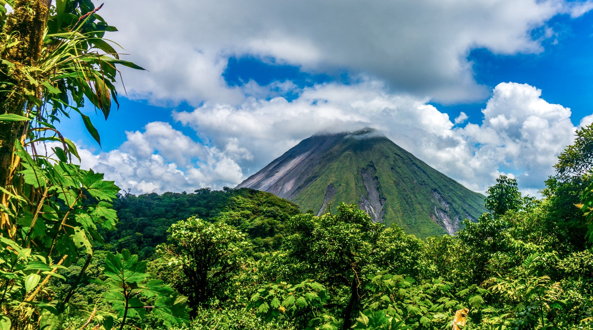

Vulcão Arenal
Buscar preços
Fortuna Waterfall
Buscar preços
Guanacaste
Buscar preços
Playa Tamarindo
Buscar preços
Teatro Nacional da Costa Rica
Buscar preços
Parte 1: Período Pré-Colombiano e Colonização (antes de 1821): Costa Rica, foi habitada por diversas culturas indígenas, como os huetares e chorotegas. Cristóvão Colombo foi o primeiro europeu a chegar à região em 1502, durante sua quarta viagem ao Novo Mundo. A colonização espanhola só começou no século XVI. Costa Rica era parte da Capitania Geral da Guatemala. Durante o período colonial, a região não era tão rica quanto outras colônias da América Latina devido à falta de minas de ouro e prata, o que levou ao desenvolvimento de uma sociedade agrária baseada na produção de açúcar e tabaco.
Parte 2: Independência e Instabilidade Política (1821-1949): Costa Rica conquistou sua independência da Espanha em 1821, quando a Capitania Geral da Guatemala se dissolveu após as guerras de independência na América Latina. O Pais tornou-se parte do Primeiro Império Mexicano e, posteriormente, da República das Províncias Unidas da América Central. A região enfrentou instabilidade política, com mudanças frequentes de governos e lutas internas. No final do século XIX, a economia começou a se diversificar com a exportação de café, o que trouxe certa estabilidade econômica ao país.
Parte 3: Estabilidade Democrática e Desenvolvimento (1949 até o presente) Em 1949, Costa Rica aboliu seu exército após uma breve guerra civil, estabelecendo-se como uma república democrática. Desde então, o país tem sido conhecido por sua estabilidade política e progresso social. O território investiu em educação e saúde, tornando-se uma das nações mais desenvolvidas da América Central. O turismo também se tornou uma importante fonte de receita. Nos últimos anos, o país tem se destacado globalmente por seu compromisso com a preservação ambiental e sustentabilidade.
Buscar preços
Buscar preços
Buscar preços
Buscar preços
Buscar preços
A Costa Rica é praticamente segura, com 1,9 milhão de visitantes anualmente, tornando-a um destino
turístico popular.
No entanto, existem perigos que vêm com esses destinos – principalmente na forma de batedores de
carteira e pequenos furtos, como roubo de bolsa, assaltos à mão armada e roubo de carros, portanto, os
turistas devem ter cuidado.
Em cidades maiores, até mesmo assaltos e roubos com armas de fogo ou faca acontecem, então tome cuidado
ao andar sozinho pelas ruas da Costa Rica.
Elas rapidamente ficam desertos à noite, depois que os ônibus públicos param de circular, por isso pode
ser extremamente perigoso andar por San José à noite.
É aconselhável que os turistas tomem um táxi nessas situações, em vez de caminhar.
Os visitantes são aconselhados a usar o bom senso e não deixar objetos de valor à vista de todos no
carro ou na praia ao entrar na água.
Outra questão a ser lembrada na Costa Rica é o trânsito: cuidado ao atravessar a rua, pois os pedestres,
em geral, não têm prioridade.
As estradas nas grandes cidades podem ser seguras, mas nas áreas rurais, elas tendem a ter buracos,
então tome cuidado ao dirigir.
Não é recomendado dirigir à noite.
O que você deve estar atento são as fortes correntes e as ondas em algumas áreas da costa da Costa Rica.
Embora a Costa Rica tenha algumas das melhores praias do mundo, você deve ter em mente que não há placas
marcando praias inseguras devido às marés e ondas e nem seus salva-vidas, então siga os conselhos locais
sobre onde é seguro nadar.
°C
Conheça outros pontos turísticos da Costa Rica acessando
skyscanner.com.br/© 2023 Latila Tourism